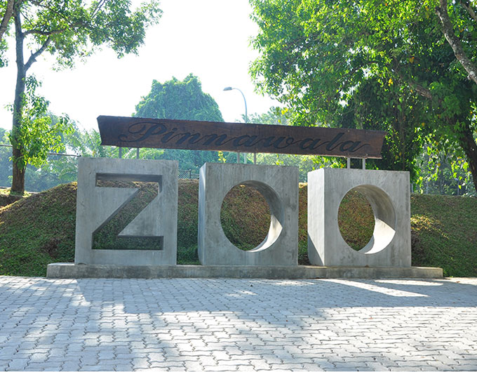

Pinnawala Elephant Orphanage (PEO) ; just as the name suggests holds a unique disposition in the ex-situ animal care. It’s success and fame has travelled not just within the country but throughout the world to an extent where Pinnawala synonymous with the Sri Lankan Elephant.
Currently being a home to 93 elephants the concept was actualized by the late Hon. Minister Kalugalle on the 16th of February 1975. Pinnawala at the time was a very remote area with lush coconut plantations and most importantly an area where the availability of mahouts was not lacking. Also the immense amount of water required by the elephants is supplemented with the availability of “Ma oya” running close by.

The Dehiwala Zoo had been widely recognized as a tourist attraction since it had a large collection of animals. However, its location in a fast developing suburb of Colombo, has posed a series of constraints that has limited its expansion and upgrading to meet the high standards expected of a modern zoo. Hence the zoo authorities were compelled to seek alternative solutions to the problems. As a result the brainchild for the Pinnawala zoo was born.